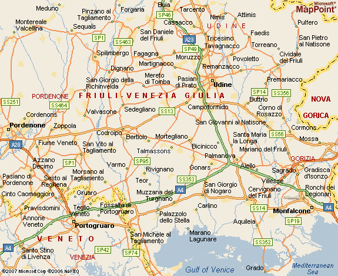

| |
Los sentimientos que invadían a ese joven mientras se apuraba por llegar a Udine, eran encontrados Esa mañana de 1923, los veinte kilómetros que separaban Talmassons, su pequeño pueblo del norte de Italia, con la ciudad, parecían no tener fin. Tanta premura había comenzado unos minutos antes, cuando un vecino le avisó:
−To Pari a le rivat a Udin − (“Tu papá llegó a Udine”, en Furlan.)
Había dejado todo para salir a su encuentro: iba en busca de un padre al que solo recordaba nebulosamente y al que toda lógica daba por muerto, como a aquellos que quince años atrás se fueron con él a Rusia en busca de trabajo. No era extraño, en esa época, que los hombres partieran en plan de “trabajadores golondrina”, recorriendo grandes distancias para hacer lo que fuere a cambio de un sueldo. Algunos hasta cruzaban el océano, en viajes que duraban meses hasta llegar a un dudoso destino. Pero, a diferencia de las olas migratorias que vendrían luego, terminada la temporada los hombres volvían invariantemente a casa.
En 1908 Luigi Zanin decidió probar suerte en Rusia, donde se decía que había buenas oportunidades de trabajo en el campo. Se despidió de Felicita, su mujer, y del pequeño Timo ( Diminutivo de Timoteo.), que entonces tenía solo cinco años, con la idea de volver a verlos muy pronto.
Hoy, un siglo más tarde, los detalles se pierden. Es difícil saber por cierto cómo fue el viaje, si en carreta o a caballo, o si se trató de una marcha de días o meses. Lo que es indudable es que ser extranjero en la Rusia de principio de siglo era como tener un pasaje de primera para el viaje inaugural del Titanic, embarcado directa e inexorablemente a la catástrofe.
El trabajo escaseaba. Luigi, después de tanto viaje, no quería volver con las manos vacías y agarraba lo que viniera. Pasó el tiempo y en Europa estalló la primera de las grandes guerras. No era posible circular de un lado a otro sin correr riesgo de muerte. Se mantuvo en Rusia, donde, mientras tanto, la tensión social crecía y finalmente estalló en Octubre del 17.
La vida no valía nada, y menos para los extranjeros, que eran mal vistos, en tiempos en que escaseaba la comida y sobraban las ideas extremistas.
Luigi emprendió el regreso, que fue largo y difícil. Los que habían partido con él se habían perdido o estaban muertos. Caminaba de noche y dormía de día. A la vera del camino se encontraba con oscuras figuras oscilantes: la patrullas del nuevo régimen colgaban a aquellos que encontraban que no fueran habitantes del lugar. Cada cadáver era una advertencia de lo que le pasaría si no iba con cuidado.
Viajaba solo, excepto por algún compañero ocasional. Un barquero accedió a cruzarlo por el Volga, escondido en el fondo del bote y tapado por maderas y mantas.
Un día de 1923 llegó a Udine, la capital de la provincia. Ya estaba a un paso de casa, y dudó. Habían pasado quince años. Con su mujer, en un principio, habían intercambiado correspondencia, pero hubo malentendidos, cartas que no llegaron, una guerra y una revolución en el medio, y no sabía cómo sería recibido. Cuando llegó a Talmassons en vez de ir a su casa, se fue para lo de sus hermanos. Sin sospechar que acababa de cruzarse en el camino con su hijo, que iba a buscarlo.
Cuando Timoteo no pudo encontrar a Luigi en la ciudad, pensó que tal vez su vecino se había equivocado, y lamentó tanta carrera en vano. Pero de regreso al pueblo le confirmaron que su padre había vuelto y que estaba en lo de sus tíos.
Allí se dirigió. Golpeó la puerta con emoción; llamaron al padre, que se acercó sin saber qué reacción esperar del muchacho.
−Papá, ¿qué estás haciendo acá? Te estamos esperando en casa − le dijo.
Luigi, sorprendido de que su hijo lo acepara así, sin más, sin preguntas sobre qué había sido de él en todo ese tiempo (que para el muchacho era prácticamente toda su vida), se fundió con él en un abrazo, y volvió por fin a su casa.
Debe de haberle resultado raro a Timo, para quien su padre siempre había estado en un viaje incierto, tenerlo sentado a la mesa junto a él y su madre. Por fin la familia volvía a estar junta. Ni siquiera opacó su alegría el hecho de que, vuelto el padre, ya no era posible la exención del servicio militar que Timo tramitaba por tratarse del único sostén de la madre.
La situación económica no era mucho mejor que cuando se habían separado. Luigi traía los bolsillos llenos de rublos que había ahorrado en Rusia, pero esos billetes ahora no valían nada…
|
| |
Así como se habían reencontrado volvieron a separarse. Timoteo marchó al servicio y Luigi se fue a trabajar a Francia, por unos meses. Desde allí hizo lo que antes no pudo: malcriar a su hijo, enviándole dinero para cigarrillos u otro gusto que quisiera darse.
Pasó el tiempo y Timoteo decidió probar suerte en América, sabiendo que ya no dejaba sola a su madre. En el nuevo mundo había trabajo y posibilidades de crecimiento. Volvió al pueblo, conoció a una chica, y preparó un nuevo viaje, pero para establecerse en Argentina.
Otra vez la situación económica separaba a padre e hijo. Esta vez, ya no volvieron a verse, pero ambos tuvieron una buena vida. |
 |